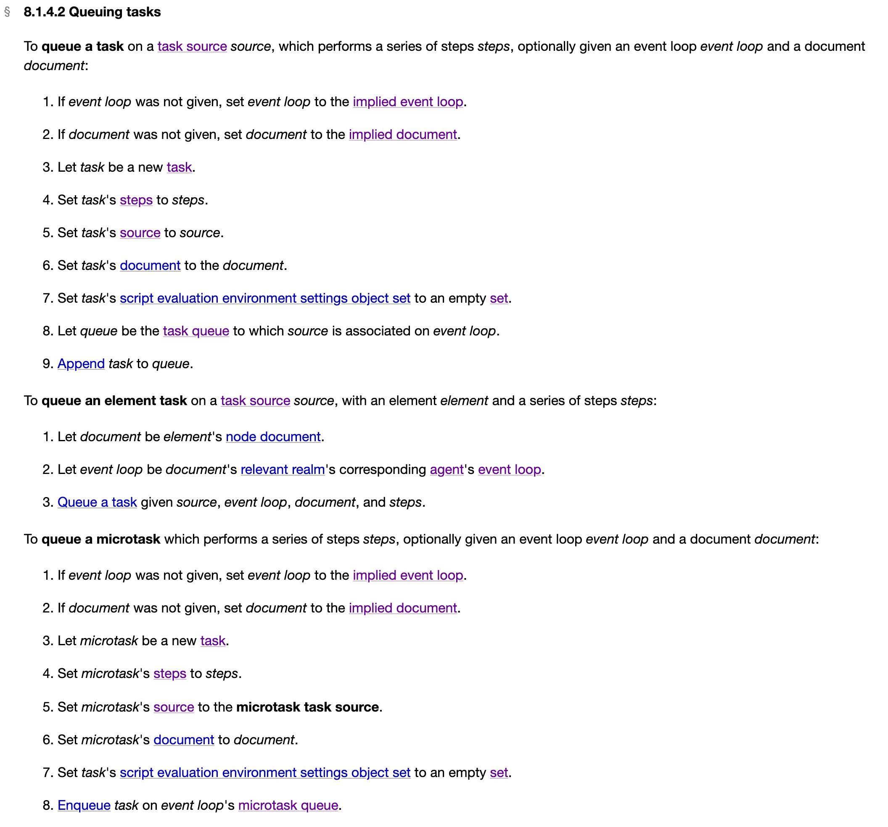

再谈EventLoop
Contents
首先明确一点，事件循环这个概念并非JavaScript语言中的。在计算机科学中，事件循环作为编程结构或者设计模式，在程序中等待和发送消息或者事件。
EventLoop 也不属于 ECMAscript 规范中的一部分。ECMAscript只规定了JavaScript这门语言的特性。
就JavaScript语言本身而言，众所周知的单线程语言。但是其宿主环境可以是多线程的。在浏览器中除了JavaScript引擎线程之外，还有GUI渲染线程，事件触发线程等，在 Node.js 中有 Libuv提供线程池来模拟不同操作系统的异步调用。我们常说的 Javascript 的 EventLoop 依赖 JavaScript 依赖宿主环境的实现。
浏览器中的EventLoop
在HTML规范中有这么一段话：
To coordinate events, user interaction, scripts, rendering, networking, and so forth, user agents must use event loops as described in this section. There are two kinds of event loops: those for browsing contexts, and those for workers.
为了协调事件、用户交互、脚本、UI 渲染和网络处理等行为，用户代理(浏览器)必须使用 event loops。而Event Loop 又可以通过Agent的类别分为三类。
所谓Agent，是一个包含执行上下文(exection contexts)，一个执行上下文栈(exection context stack)，一个运行时上下文(running execution context)，一个代理记录(Agent Record)和一个执行线程(executing thread)
浏览器中目前有包含三类：
- similar-origin window agent：对应用户代理(浏览器)的主线程，执行上下文是全局执行上下文，其对应的事件循环称之为
window event loop。 - dedicated worker agent, shared worker agent 和 service worker agent：这三个worker agent对应各自的执行线程和执行上下文，对应的事件循环称之为
worker event loop。 - worklet agent：类似，事件循环称之为
worklet event loop。
Task Queues
每个事件循环会有一个或者多个任务队列(task queues)。任务队列是一系列任务(task)的集合(sets)。注意这里说的任务队列(task queues)是 Sets 不是 Queues。
每一个事件循环都有一个 当前执行中的任务(currently running task)，这个任务可以为null，事件循环初始化时这个任务就是null。这个任务是可以重新载入。
每一个事件循环都有一个 微任务队列(microtask queue)，微任务队列是一个 Queue。
Task
任务(task)是一个结构体，包含以下数据：
Steps：一系列任务需要做的事情 source：任务的来源，用来组织和序列化任务。每一个事件来源在任务队列中都有一个特有的任务队列与之相关。任务来源分以下几类：
- DOM操作
- 用户交互
- 网络请求
- 历史回溯。调用
history.back()等相关API
document：一个与task相关的Document实例。如果这个任务不在window event loop中，则document为null
script evaluation environment settings object set：环境配置对象集合，包含一个执行上下文
处理模型(Processing model)
当调用栈(call stack)是空栈时，按照下面的步骤来处理：
- 选择任务队列中最早的那个任务(task A)。
- 如果 task A 为 null(意味着任务队列为空)，跳到第6步
- 将task A 设置为
currently running task - 执行 task A(task对应的回调函数)
- 设置
currently running task为 null, 移除 task A - 执行微任务队列
- a. 从微任务队列中选择最早的任务 task X
- b. 如果 task X 为 null (意味着微任务队列为空)，跳到第g步
- c. 将 task X 设置为
currently running task - d. 执行 task X
- e. 设置
currently running task为 null, 移除 task A - f: 选择下一个队列中下一个任务，跳到第b步
- g: 结束微任务队列
- 跳到第1步
简单来说就是：
- 先执行任务队列中最早加入的任务，然后移除这个任务
- 执行微任务队列中所有的任务，然后移除这个任务
- 下一轮：继续执行下一个任务队列中的任务(重复第二步)。直到没有可执行的任务。
关于处理模型的具体细节可参考 Processing Model
“宏任务”和微任务
什么是微任务，在规范中是这么定义的：
A microtask is a colloquial way of referring to a task that was created via the queue a microtask algorithm
在规范中其实并没有提到“MarcoTask”这样的概念，只有 Task 和 MircoTask 之分，我们暂且就将不是微任务的任务称之为宏任务，具体来看二者入列逻辑步骤。

可以看到在这两类任务在前7步都是一样的，微任务在第八步是直接将任务入列至事件循环的微任务队列。注意这里是 Queue。而宏任务则是先找到一个任务源(task source)与事件循环相关连的任务队列，然后将这个任务入列至任务队列。
这么看来，二者的区别在于入列时的算法，并没有明确规定某一个任务到底采用何种规则入列。
在浏览器这个上下文中，macrotask有以下的种类：
- 当外部或内部
<script>标签所对应的脚本加载完成之后，执行这些脚本就是一个macrotask； - 当用户点击页面上的按钮，那么分发click事件后的对handler的执行就是一个macrotask；
- 调用setTimeout或者setInterval时传入的callback的执行，就是一个macrotask;
- 非标准全局方法setImmediate()调用时传入的callback的执行，就是一个macrotask;
- requestAnimationFrame调用时传入的callback的执行，就是一个macrotask; …….
microtask的种类有以下几种：
- 在promise对象调用then/catch/finally的时候传入的callback的执行，就是一个microtask；
- 显式地调用queueMicrotask(fn)来入队一个microtask时候，那么对这个fn函数的执行就是一个microtask;
- new MutationObserver()传入callback的执行就是一个microtask;
- Object.observe()传入callback的执行就是一个microtask。
参考
Author 张伦
LastMod 2019-08-20